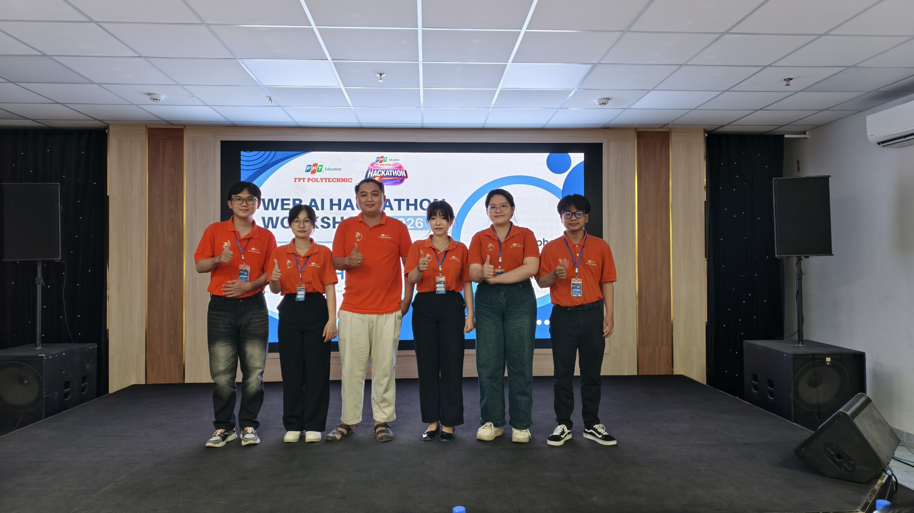
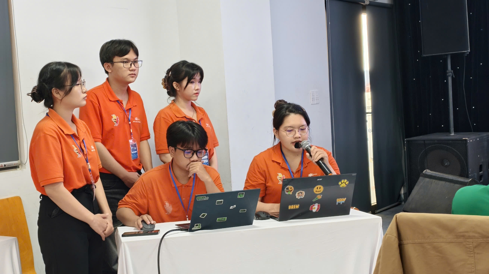

TaskSphere là nền tảng hỗ trợ lập kế hoạch, theo dõi tiến độ và phối hợp công việc theo thời gian thực. Hệ thống kết hợp quản lý sprint, báo cáo vận hành và AI hỗ trợ khởi tạo kế hoạch để giúp đội ngũ làm việc rõ ràng và nhất quán hơn.
Giới thiệu
TaskSphere được xây dựng cho bài toán quản lý dự án và phối hợp công việc trong môi trường làm việc theo Agile. Mục tiêu của hệ thống là giúp đội ngũ có một nơi tập trung để lập kế hoạch, theo dõi thực thi, trao đổi thông tin và kiểm soát tiến độ.
Từ việc đọc source backend và frontend, có thể thấy sản phẩm không dừng ở mức quản lý task cơ bản. Hệ thống đã bao gồm workspace health, sprint analytics, dependency management, QA workflow, comment mention, export báo cáo, webhook integration, AI project planning và AI task allocation theo skill và capacity.
Kiến trúc FE và BE được tách biệt rõ ràng, kết hợp Redis, WebSocket, reporting, scheduler và các lớp bảo mật để đảm bảo sản phẩm có thể tiếp tục mở rộng và hoàn thiện trong các giai đoạn tiếp theo.
Góc nhìn doanh nghiệp
Business Value
TaskSphere phù hợp với các nhóm sản phẩm, nhóm phát triển phần mềm hoặc agency cần một hệ thống tập trung để quản lý kế hoạch, vận hành công việc, theo dõi hiệu suất và chuẩn hóa quy trình phối hợp.
Tạo project, backlog, sprint, timeline và AI-generated plan để biến ý tưởng thành roadmap có thể thực thi ngay.
Task status, comment mention và notification được đồng bộ tức thì để cả team không bỏ lỡ thay đổi quan trọng.
Velocity, burndown, member performance, workspace health và AI insight giúp PM nhìn thấy xu hướng delivery chứ không chỉ snapshot.
Webhooks, export Excel/PDF, Swagger và hạ tầng Docker giúp hệ thống dễ kết nối với workflow hiện có của doanh nghiệp.
Source Code
Nội dung của trang này được điều chỉnh dựa trên việc đọc cả backend lẫn frontend, vì vậy các phần mô tả bên dưới bám sát vào tính năng và cấu trúc thực tế của dự án.
RESTful API xử lý business logic, security, notifications, reports, exports, webhook, scheduling, attachment processing và AI flows. Backend được viết bằng Java 21 + Spring Boot 3.5.5.
Giao diện được xây dựng bằng Next.js 15, TypeScript và hệ sinh thái React hiện đại. FE bao gồm dashboard, board, reports, workspace health, notifications, AI modal và các màn hình nghiệp vụ phục vụ vận hành dự án hằng ngày.
Tính năng
Những nhóm tính năng dưới đây được rút trực tiếp từ source BE + FE. Đây là phần quan trọng nhất để doanh nghiệp hiểu TaskSphere mang lại giá trị gì trong vận hành thực tế.
Quản lý nhiều workspace và project song song, có global progress, risky project count, focus project, hotspot task và member preview cho góc nhìn cấp quản lý.
Tạo project thủ công hoặc với AI, quản lý backlog, active sprint, batch assign vào sprint, sprint auto-close và cảnh báo khi scope thay đổi làm lệch burndown.
Board kéo thả theo cột, lưu vị trí task, đồng bộ realtime và có rule QA/testing: không nhảy thẳng sang Done, reviewer phải độc lập với assignee.
Task có checklist, subtask, dependency blocker, recurring schedule, worklog, attachment, custom field, comment thread, mention, activity tab và timeline shift.
Comment rich text với Tiptap, @mention thành viên, notification center, unread badge, invite flow, activity log và realtime events giúp team bám cùng một nguồn trạng thái.
Burndown, burnup, velocity, velocity forecast, project overview, member performance, calendar workload và export Excel/PDF tạo nên lớp báo cáo đủ sâu cho PM và stakeholder.
AI phân tích brief, hỏi thêm dữ liệu còn thiếu, sinh project plan, chia sprint, đề xuất task, gợi ý assignee và tạo insight cho report dựa trên dữ liệu thật.
JWT + refresh rotation, Google signin, OTP, Redis blacklist, rate limiting Bucket4j, HTML sanitizing, MIME detection, virus scan và optimistic locking giúp hệ thống an toàn hơn khi vận hành thật.
Swagger/OpenAPI, webhook outbound, Docker, CI/CD, health check, background schedulers và cấu trúc repo rõ ràng giúp hệ thống thuận tiện cho việc triển khai, kiểm thử và mở rộng.
Thuật toán áp dụng
Đây là những thuật toán và rule nổi bật được rút trực tiếp từ source. Phần logic này cho thấy hệ thống không chỉ tập trung vào giao diện mà còn xử lý các bài toán thực tế trong quản lý dự án và phân phối công việc.
Engine chấm điểm mức độ phù hợp giữa task và thành viên dựa trên skill tags, active task count và độ khó story point trung bình.
Từ một brief đầu vào, AI phân tích phần còn thiếu rồi sinh project plan, chia sprint theo deadline và gợi ý assignee để PM review trước khi tạo project thật.
Hệ thống quy đổi story point sang giờ làm, cộng tải công việc theo tuần và cảnh báo khi thành viên vượt quá capacity hoặc project xuất hiện tín hiệu risk.
TaskSphere snapshot story points tại thời điểm bắt đầu sprint, sau đó tính ideal line, actual remaining points và velocity completed để theo dõi khả năng delivery theo thời gian.
Task không thể đóng nếu còn blocker hoặc subtask chưa xong. Quy trình review/testing cũng có rule để đảm bảo người accept task độc lập với người thực hiện.
Module burnout dùng thuật toán Longest Increasing Subarray trên chuỗi lead time để tìm giai đoạn tăng liên tục dài nhất, sau đó tạo message hỗ trợ 1-on-1 bằng AI.
Luồng hoạt động
Frontend Next.js gọi API hoặc subscribe WebSocket dựa trên ngữ cảnh màn hình và role hiện tại.
Spring Boot validate JWT, kiểm tra quyền, áp business rule, ghi dữ liệu vào MySQL và cache vào Redis khi phù hợp.
Notification, Kanban sync, attachment processing, recurring task và scheduler giúp hệ thống tiếp tục vận hành ngoài request chính.
Các thay đổi runtime tiếp tục nuôi cho reporting, workspace health, AI insight và decision support cho PM.
Kiến trúc
Kiến trúc client-server được tách biệt rõ ràng, gồm REST API, WebSocket, Redis cache, scheduler, file storage và AI service orchestration. Cấu trúc này giúp hệ thống dễ bảo trì, dễ mở rộng và phù hợp cho việc phát triển lâu dài.
┌─────────────────────────────────────────────────────────────────────┐ │ TASKSPHERE PLATFORM │ └─────────────────────────────────────────────────────────────────────┘ ┌─────────────────────────────┐ ┌─────────────────────────────────────┐ │ FRONTEND │ │ BACKEND │ │ Next.js 15 + React 18 │◄REST►│ Spring Boot 3.5.5 + Java 21 │ │ TypeScript + Query + UI │◄ WS ►│ Security + WebSocket + Scheduler │ │ Tiptap + Recharts + i18n │ │ Reports + Export + AI Services │ └─────────────────────────────┘ └─────────────────────────────────────┘ ┌─────────────────────── Data & Infrastructure ───────────────────────┐ │ MySQL 8 | Redis 7 | MinIO / S3 | Docker / CI-CD │ │ primary DB | cache & blacklist | attachments | deployment flow │ └──────────────────────────────────────────────────────────────────────┘
API Reference
Các route dưới đây đại diện cho những capability lớn nhất của hệ thống. Source backend còn nhiều controller và endpoint chi tiết hơn nữa.
Tech Stack
Stack được lựa chọn theo tiêu chí phù hợp với sản phẩm thực tế: dễ triển khai, dễ mở rộng và đủ chiều sâu kỹ thuật để đáp ứng các yêu cầu vận hành của hệ thống.
Team
Phần này giới thiệu các thành viên tham gia phát triển TaskSphere. Vai trò được trình bày ngắn gọn để giữ bố cục rõ ràng và chuyên nghiệp hơn.

